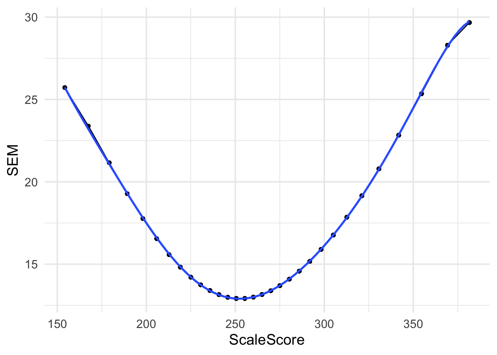

cutoff <- p %>%
mutate(ScaleScore = round(ScaleScore)) %>%
group_by(tier, grade, content) %>%
nest() %>%
left_join(cuts)## Joining, by = c("grade", "tier", "content")compute_sem <- function(model, c1, c2, c3) {
l <- list(c1, c2, c3)
sems <- map_dbl(l, ~predict(model, newdata = data.frame(ScaleScore = .x)))
data.frame(cut1_se = sems[1],
cut2_se = sems[2],
cut3_se = sems[3])
}
cut_score <- cutoff %>%
mutate(m = map(data, ~lm(SEM ~ poly(ScaleScore, 7), na.omit(.x))),
sem = pmap(list(m, cut1, cut2, cut3), compute_sem))
cut_score %>%
select(grade:content, cut1:cut3, sem) %>%
unnest(sem) %>%
rename(cut1_cut = cut1,
cut2_cut = cut2,
cut3_cut = cut3) %>%
pivot_longer(starts_with("cut"),
names_to = c("cutt", "var"),
names_sep = "_",
values_to = "val") %>%
pivot_wider(names_from = var, values_from = val) %>%
select(-cutt)## # A tibble: 102 x 5
## # Groups: grade, tier, content [34]
## grade tier content cut se
## <dbl> <dbl> <chr> <dbl> <dbl>
## 1 11 1 ela 286 17.99467
## 2 11 1 ela 300 18.92275
## 3 11 1 ela 323 21.23091
## 4 11 1 math 285 19.48722
## 5 11 1 math 300 20.87010
## 6 11 1 math 357 27.58068
## 7 11 1 science 267 32.11191
## 8 11 1 science 300 28.23959
## 9 11 1 science 374 22.02517
## 10 11 2 ela 484 18.76597
## # … with 92 more rows # data = pmap(list(data, cut1, cut2, cut3),
# ~filter(..1,
# ScaleScore == ..2 |
# ScaleScore == ..3 |
# ScaleScore == ..4))
tmp <- p %>%
filter(grade == 3 & tier == 1 & content == "ela")
ggplot(tmp, aes(ScaleScore, SEM)) +
geom_point() +
geom_line() +
geom_smooth(method = "lm",
formula = y ~ poly(x, 7))## Warning: Removed 106 rows containing non-finite values
## (stat_smooth).## Warning: Removed 106 rows containing missing values
## (geom_point).## Warning: Removed 106 row(s) containing missing values
## (geom_path).
m <- lm(SEM ~ poly(ScaleScore, 7), na.omit(tmp))
predict(m, newdata = data.frame(ScaleScore = 286))## 1
## 14.60247# p_files <- fs::dir_ls(here::here("data", "item-estimates"))
#
# p <- map_df(p_files, read_csv, .id = "file") %>%
# mutate(file = gsub(here::here("data", "item-estimates"), "", file),
# grade = as.numeric(gsub(".+g(\\d?\\d).+", "\\1", file)),
# tier = as.numeric(gsub(".+\\dt(\\d).+", "\\1", file)),
# content = gsub(".+-(.+)\\..+", "\\1", file)) %>%
# select(item, grade, tier, content, b_estimate)
#
# cuts <- read_excel(here::here("data", "cut", "plc-cuts.xlsx"))
#
# cuts <- p %>%
# select(content, grade, b_estimate) %>%
# nest(-content, -grade) %>%
# mutate(ip = map(data, ~as.matrix(data.frame(1, $b_estimate, 0))),
# content = tolower(content)) %>%
# left_join(cuts)
#
# abils <- p %>%
# nest(-content, -grade) %>%
# rename(persons = data)
# cuts <- left_join(cuts, abils)
# acc_con_tbls <- cuts %>%
# mutate(theta = map(persons, "theta"),
# se = map(persons, "se"),
# marginal = pmap(list(cut, ip, theta, se),
# function(cut, ip, theta, se)
# class.Rud(cut, ip, theta, se, D = 1)$Marginal),
# accuracy = map_dbl(marginal, 1),
# consistency = map_dbl(marginal, 2)) %>%
# select(content_area, grade, amo_lvl, accuracy, consistency) %>%
# rename(Grade = grade,
# AMO = amo_lvl,
# Accuracy = accuracy,
# Consistency = consistency) %>%
# split(.$content_area) %>%
# map(~ungroup(.) %>% select(-content_area))
# walk2(acc_con_tbls,
# paste0(c("ELA", "Math", "Science"),
# " Accuracy/Consistency"),
# ~knitr::kable(.x, "latex", booktabs = TRUE,
# caption = .y,
# digits = 2) %>%
# kable_styling(full_width = TRUE,
# latex_options = "hold_position") %>%
# print())